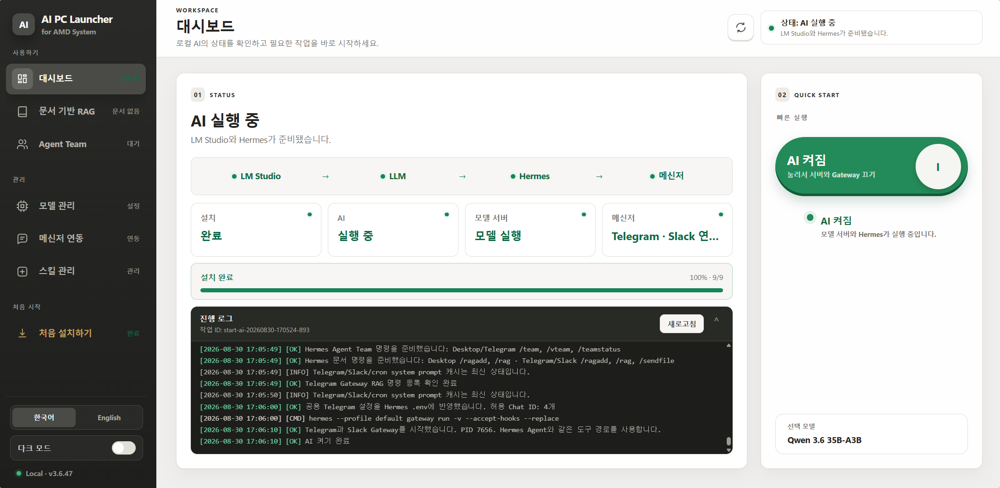
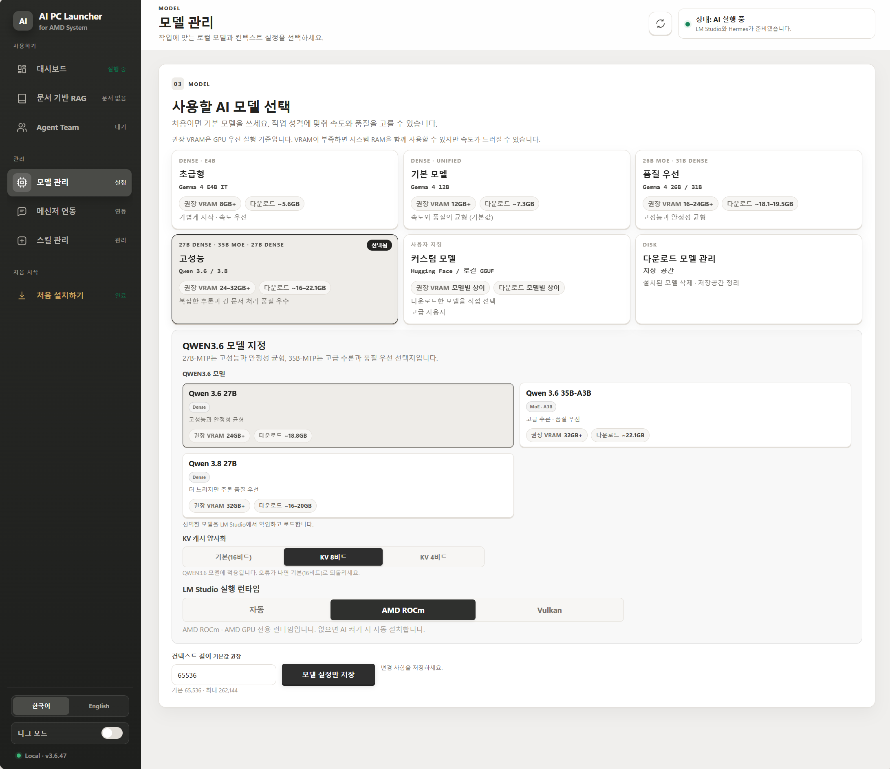
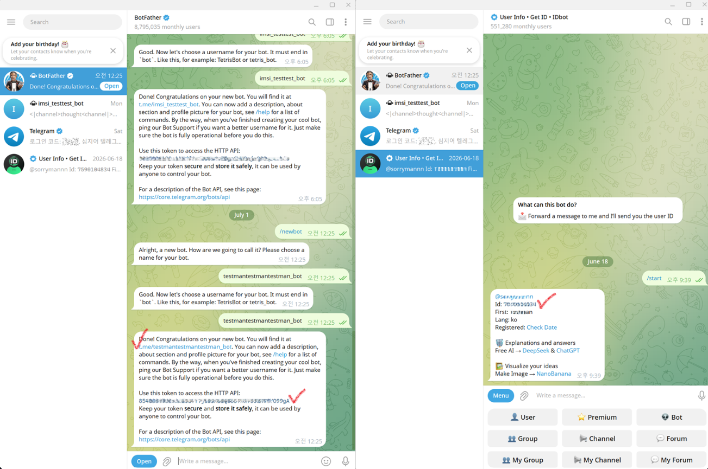
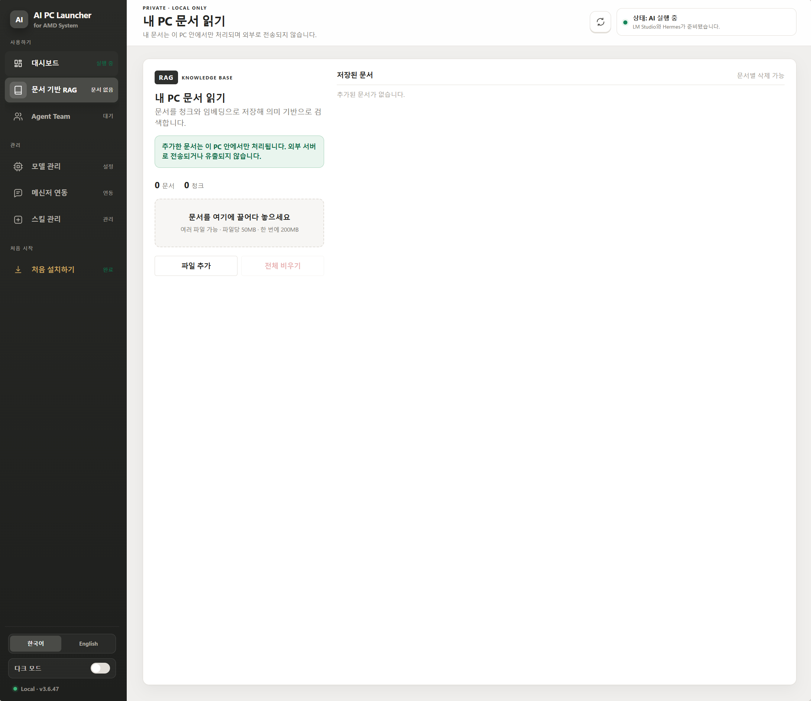

ZIP 안의 파일과 Trust 폴더가 빠지지 않도록 모두 풉니다.
USER GUIDE
설치 및 사용 가이드
현재 3.6.81 UI와 로컬 AI·Cloud API 실행 환경을 기준으로 설명합니다.
기준 환경: 준비됨ROCm 로컬 AI · Cloud API
00OVERVIEW
설치는 한 번,
일상 사용은 스위치 한 번.
AI One-touch v3.6은 AMD PC에서 LM Studio 로컬 모델 또는 외부 Cloud API 모델을 Hermes, Telegram·Discord·Slack, 문서 기반 RAG와 연결해 한 화면에서 관리하는 AI 런처입니다.
AMD 환경 최적화로컬·클라우드 선택Windows오프라인 HTML 가이드
현재 기본 동작
지원 CPUAMD 표기 CPU
기본 런타임AMD ROCm
기본 KV 캐시8비트(Q8)
모델 선택GPU VRAM 자동 감지
일상 조작AI 켜기·끄기 스위치
v3.6.81 업데이트: Discord 연결을 지원하고, 처음 사용하는 사람도 서버 생성부터 봇 초대와 실제 대화까지 따라 할 수 있도록 이 가이드에 전체 절차를 추가했습니다. Hermes 스킬 설치기는 SKILL.md뿐 아니라 instruction.md와 README.md의 실행 정보도 분석합니다.
01
설치와 업데이트
ZIP 내부에서 바로 실행하지 말고 새 폴더에 완전히 압축 해제한 뒤 설치합니다.
1_Install_AI_OneTouch_Internal.bat을 관리자 권한으로 실행합니다.
AI One-touch Internal 아이콘으로 런처를 실행합니다.
런처를 완전히 종료한 후 새 ZIP의 설치 BAT을 다시 실행합니다.
업데이트: 상위 버전을 설치하면 기존 설정, API 연결 정보와 내려받은 LM Studio 모델은 유지하면서 런처가 업데이트됩니다. 화면이 예전과 같다면 왼쪽 아래 버전이 v3.6.81인지 먼저 확인하세요.
02
처음 설치하기
하드웨어를 확인하고 PC에 맞는 모델과 실행 환경을 설치합니다.
- 왼쪽 메뉴의 처음 설치하기를 열고 권장 모델을 확인합니다. 런처는 그래픽카드의 VRAM을 읽어 모델 등급을 자동으로 제안합니다.
- 실행 런타임은 AMD ROCm과 Vulkan을 선택할 수 있습니다. 현재 v3.6의 Windows AMD 기본값은 안정성을 고려한 AMD ROCm입니다.
- KV 캐시는 기본 8비트(Q8)입니다. 메모리를 더 줄여야 할 때만 Q4, 특정 모델 호환 문제가 있을 때만 기본 형식으로 변경합니다.
- AI 환경 설치 시작을 누릅니다. LM Studio, 언어모델, Hermes, 웹 검색 및 문서 도구가 순서대로 설치됩니다.
- 진행률이 100%가 되고 설치 상태가 완료로 바뀌면 대시보드로 이동합니다.
VRAM 28GB+Qwen 3.6 35B-A3B
큰 VRAM 환경에서 고급 추론과 긴 문서 처리를 우선합니다.
VRAM 16GB+Gemma 4 26B A4B IT QAT
16GB급 GPU에 맞춘 QAT 모델입니다. 검증된 GPU 우선 설정과 65K 컨텍스트로 실행됩니다.
VRAM 14GB 미만Gemma 4 E4B IT
메모리가 작은 환경에서 가볍고 빠르게 시작합니다.
컨텍스트 길이: 모델 관리에서 조절할 수 있습니다. 긴 컨텍스트는 더 많은 VRAM·시스템 RAM을 사용하므로, 평소 사용하던 값이 있더라도 모델이나 런타임을 바꾼 뒤에는 메모리 상태를 확인하세요.
03
대시보드에서 AI 켜기·끄기
현재 대시보드는 하나의 큰 스위치로 모델 서버와 Hermes를 함께 제어합니다.

ONAI 켜기
스위치를 누르면 선택 모델을 ROCm으로 로드하고 Hermes와 설정된 메신저 연결을 시작합니다. 켜진 상태는 초록색으로 표시됩니다.
OFFAI 끄기
다시 누르면 모델 서버와 Hermes를 순서대로 종료합니다. 꺼진 상태는 붉은색으로 표시됩니다.
정상 종료: 스위치 문구가 “AI 꺼짐”으로 바뀌고 VRAM이 해제될 때까지 잠시 기다리세요. 작업 관리자 GPU의 “사용률 100%” 표시는 그래프 엔진 선택 때문에 남을 수 있으므로 실제 Compute 사용률과 전용 GPU 메모리를 함께 확인합니다.
04
로컬 AI와 Cloud API 선택
LM Studio 로컬 모델과 외부 Cloud API 중 Hermes가 사용할 언어모델을 선택합니다.
모델 변경 순서: 대시보드에서 AI 끄기 → 모델 변경 및 설정 저장 → 대시보드에서 AI 다시 켜기 순서로 진행합니다. AI가 실행 중인 상태에서는 모델을 변경하지 마세요.
LOCAL AILM Studio 로컬 모델
문서·대화·답변을 PC 안에서 처리합니다. 기존 Qwen·Gemma·직접 지정 GGUF와 ROCm/Vulkan 설정을 그대로 사용할 수 있습니다.
CLOUD API외부 클라우드 모델을 Hermes에 연결
현재는 OpenAI API를 지원합니다. API 키를 등록하고 모델 목록을 불러온 뒤 연결 확인과 저장을 누르면 다음 AI 켜기부터 선택한 클라우드 모델을 사용합니다.
- Cloud API를 선택하고 현재 공급자인 OpenAI의 API 키를 입력합니다. 키는 현재 Windows 사용자만 복호화할 수 있게 암호화 저장되며 Hermes 설정 파일에는 평문으로 기록하지 않습니다.
- 모델 불러오기에서 계정이 사용할 수 있는 클라우드 모델을 선택하고 연결 확인으로 실제 짧은 응답을 테스트합니다.
- 설정 저장 후 대시보드에서 AI를 다시 켭니다. 이때 LM Studio 언어모델은 올리지 않고 Hermes Desktop과 설정된 메신저를 Cloud API에 연결합니다.
- 로컬 방식으로 돌아가려면 로컬 AI를 선택하고 기존 모델 설정을 저장한 뒤 AI를 다시 켭니다.
데이터·비용 안내: Cloud API 모드에서는 대화 내용과 RAG가 찾은 문서 근거 일부가 선택한 외부 공급자로 전송됩니다. 현재 공급자는 OpenAI이며 API 사용료가 별도로 발생할 수 있습니다. API 키를 메신저나 대화창에 붙여 넣지 마세요.
언어 전환: 왼쪽 아래의 한국어 / English를 누르면 현재 화면 전체가 즉시 전환됩니다. 저장한 언어와 Cloud API 설정은 앱을 다시 열어도 유지됩니다.

- 모델을 바꾸기 전에 대시보드에서 AI 끄기를 누르고 모델 서버와 Hermes가 완전히 종료될 때까지 기다립니다.
- 커스텀 모델 → LM Studio에서 다운로드를 누르면 모델 검색 창이 열립니다.
- 모델 이름을 검색하고 원하는 결과를 누른 뒤 Q4_K_M·Q8_0 등 양자화를 선택합니다.
- 선택 저장 및 다운로드를 누르면 런처 설정에 저장되고 LM Studio 다운로드가 시작됩니다.
- 다운로드 완료 후 목록 새로고침에서 설치된 모델을 선택하고 모델 설정만 저장을 누릅니다.
- 대시보드로 돌아가 AI 다시 켜기를 눌러 변경한 모델을 로드합니다.
LOCAL GGUF이미 가지고 있는 모델
GGUF 파일 또는 폴더를 선택해 라이브러리에 추가한 뒤 사용할 모델로 저장합니다.
LM STUDIO검색해서 다운로드
Hugging Face 주소를 외워 입력할 필요 없이 검색 결과와 양자화를 화면에서 선택합니다.
다운로드를 중단했다면: 중단 처리가 끝날 때까지 기다린 뒤 목록을 새로고침하고 모델을 다시 선택하세요. 저장 버튼은 현재 저장된 설정과 다른 모델·런타임·컨텍스트 값이 있을 때 활성화됩니다.
05
Telegram·Discord·Slack 연동
허용한 사용자만 Hermes에 메시지를 보내고 PC 파일을 돌려받도록 설정합니다.
Telegram
BotFather에서 봇을 만들고 HTTP API Token을 발급합니다. 사용자 ID 확인 봇에서 본인의 숫자 ID를 확인해 허용 Chat ID에 입력합니다.
Bot Token · 허용 Chat IDDiscord
Developer Portal에서 앱과 Bot을 만들고, 본인의 Discord 사용자 ID를 허용 대상에 입력한 뒤 봇을 사용할 서버에 초대합니다.
Bot Token · 허용 사용자 IDSlack
앱 설정문으로 앱을 만들고 Bot Token(xoxb-), App Token(xapp-, connections:write), 사용할 멤버 ID를 입력해 Socket Mode로 연결합니다.
xoxb- · xapp- · U로 시작하는 멤버 ID- Telegram은 공식 인증 BotFather에서 /newbot으로 봇을 만들고 Token을 복사합니다.
- 사용자 ID 확인 봇에 /start를 보내 숫자로 된 ID를 확인합니다.
- Slack은 런처의 Slack 앱 설정문 복사 후 Slack의 Create New App → From a manifest에 붙여넣습니다.
- Slack 앱을 Workspace에 설치하고 xoxb- Bot Token과 xapp- App Token, 본인의 멤버 ID를 런처에 저장합니다.
- 설정 저장 후 AI를 켭니다. Telegram에서는 봇에게 메시지를 보내고, Slack에서는 앱 DM 또는 채널 멘션으로 사용합니다.

Slack 표시 방식: Slack에서는 Hermes의 답변이 질문 아래 스레드 댓글로 표시될 수 있으며 정상 동작입니다.
Discord를 처음 연결하는 방법
- Discord 서버 만들기: Discord 왼쪽의 + 버튼 → 직접 만들기를 눌러 봇을 사용할 서버를 하나 만듭니다. 이미 서버가 있으면 이 단계는 건너뜁니다.
- Bot 만들기: 런처의 Discord Bot 설정 열기를 누르거나 Discord Developer Portal의 Applications에서 New Application을 선택합니다. 이름을 정한 뒤 왼쪽 Bot → Add Bot을 누릅니다.
- Bot Token 복사: Bot 화면에서 Reset Token 또는 Copy로 발급한 문자열을 런처의 Bot Token에 붙여 넣습니다. Application ID나 Client ID를 넣는 칸이 아닙니다.
- 메시지 권한 켜기: 같은 Bot 화면의 Privileged Gateway Intents에서 Message Content Intent를 켜고 변경 내용을 저장합니다.
- 내 사용자 ID 찾기: Discord의 사용자 설정(톱니바퀴) → 고급 → 개발자 모드를 켭니다. 내 프로필을 오른쪽 클릭해 사용자 ID 복사를 누르고, 숫자를 런처의 허용 사용자 ID에 넣습니다. 이것도 Application ID나 Client ID가 아닙니다.
- 선택 항목: 허용 역할 ID와 허용 채널 ID는 특정 역할·채널로 제한할 때만 입력합니다. 처음에는 비워 두어도 됩니다. 기본 알림 채널 ID도 알림을 보낼 채널이 필요할 때만 입력합니다.
- 봇을 서버에 초대: Developer Portal의 OAuth2 → URL Generator에서 bot과 applications.commands를 체크합니다. Bot Permissions에서는 View Channels, Send Messages, Read Message History, Attach Files를 허용하고 생성된 주소를 엽니다. 방금 만든 서버를 선택해 승인합니다.
- 런처 연결: 런처에서 설정 저장 → 저장하고 연결을 누릅니다. 대시보드로 돌아가 AI 켜기를 눌러야 Discord 봇이 온라인으로 바뀝니다.
- 실제 사용: 서버 채널에서는 @봇이름 안녕처럼 봇을 멘션해 질문합니다. 서버 채널에서 멘션할 때만 답변을 끄면 허용된 채널의 일반 메시지에도 반응합니다. 봇에게 보내는 DM은 멘션 없이 사용할 수 있습니다.
보안: Bot Token은 봇의 비밀번호입니다. 화면 캡처, 채팅, 문서, GitHub에 올리지 마세요. 노출했다면 Developer Portal의 Bot 화면에서 즉시 Reset Token을 누르고 런처에 새 토큰을 저장하세요.
연결은 됐는데 답이 없을 때: ① 대시보드에서 AI가 켜져 있는지 ② 봇이 서버 멤버 목록에서 온라인인지 ③ 서버 채널에서 @봇이름으로 멘션했는지 ④ 허용 사용자 ID가 본인 계정의 숫자 ID인지 확인합니다. PrivilegedIntentsRequired가 보이면 Message Content Intent를 켜고 다시 연결하세요.
NATURAL LANGUAGE자연어로 파일 받기
“바탕화면의 AMD 샘플 엑셀 파일 보내줘”처럼 요청하면 Hermes가 실제 파일을 확인해 한 번만 첨부합니다.
DIRECT COMMAND경로를 직접 지정
/sendfile 뒤에 전체 경로를 입력하면 모델 해석을 거치지 않고 지정 파일을 보냅니다.
/sendfile "C:\Users\사용자\Desktop\AMD_Samples.xlsx"경로에 공백이 있으면 큰따옴표로 감쌉니다.바탕화면의 월간 보고서 PDF 보내줘파일명과 위치를 구체적으로 적으면 더 정확합니다.파일 전송: 파일이 실제로 존재해야 하며 메신저별 업로드 제한보다 작아야 합니다. Token은 비밀번호와 같으므로 공유하지 마세요.
06
문서 기반 RAG
문서를 끌어다 놓고 로컬 지식베이스로 등록한 뒤 근거 기반 질문을 합니다.

FILES한 번에 최대 20개
파일당 50MB, 한 번에 총 200MB까지 등록할 수 있습니다.
LOCAL / HYBRID실행 방식에 맞춘 처리
문서, 청크와 임베딩은 PC에 보관됩니다. 로컬 AI는 답변도 PC 안에서 만들고, Cloud API는 검색된 근거 일부와 질문만 외부 공급자로 전송해 답변을 만듭니다.
COMMAND/rag로 질문
일반 대화와 구분하려면 문서 질문 앞에 /rag를 붙입니다.
지원 문서와 검색 방식: PDF·Word·Excel·PowerPoint·CSV·TXT·Markdown·JSON을 등록할 수 있습니다. Qwen3-Embedding-0.6B가 자연어 질문과 가까운 문서 청크를 찾아 견적, 계약, 재고, 보고서 등 업무 종류에 고정되지 않은 답변을 만듭니다.
/rag 원장에서 R9700의 현재 대여 현황을 알려줘제품명과 질문 범위를 구체적으로 적습니다./RAG 계약서별 납기일과 담당자를 표로 정리해줘대문자 /RAG도 동일하게 작동합니다.07
Agent Team과 스킬 관리
복합 업무는 역할별 에이전트로 나누고, 반복 기능은 스킬로 확장합니다.
AGENT TEAM복합 업무 분담
한 요청을 조사·분석·검토처럼 역할별로 나눠 처리합니다. 최종 결과는 원본 자료와 비교해 확인합니다.
SKILLS기능 확장
스킬 관리에서 설치 위치와 내용을 확인합니다. 다른 PC에서 같은 기능이 필요하면 해당 스킬도 함께 설치합니다.
원본 데이터 보호: Excel이나 문서를 수정하는 작업은 대상 파일·행·열과 허용 작업을 명확히 지정하세요. 모델이 비슷한 이름을 같은 값으로 임의 판단하지 않도록 원본 표기를 그대로 유지하게 요청합니다.
08
문제 발생 시 복구
재실행 → 재설치 → 초기화 순서로 진행합니다.
바로가기로 앱이 안 열림
이미 실행 중인 창이 작업 표시줄에 있는지 먼저 확인합니다. 없다면 바로가기를 다시 실행하고, 계속 안 열릴 때만 최신 ZIP 설치 BAT을 관리자 권한으로 다시 실행합니다.
런처가 두 개 열림
기존 창을 먼저 닫고 바탕화면 바로가기를 한 번만 실행합니다. 최신 설치본은 이미 실행 중인 런처 창을 재사용합니다.
모델 다운로드가 멈춤
VPN을 끄고 LM Studio 다운로드 상태를 확인합니다. 중단 작업이 정리된 후 목록 새로고침 → 모델 재선택 → 다운로드 순으로 시도합니다.
AI 켜기 후 응답이 없음
대시보드의 진행 로그에서 모델 로드와 Hermes 시작 여부를 확인합니다. AI를 끄고 VRAM이 해제된 뒤 다시 켭니다.
메신저가 응답하지 않음
Token과 허용 ID를 저장했는지, AI가 켜져 있는지 확인합니다. Discord는 봇 초대·Message Content Intent·채널 멘션을, Slack은 Socket Mode 상태를 함께 확인합니다.
문서 RAG가 답하지 않음
문서 수가 1개 이상인지, 등록 처리가 끝났는지, 질문 앞에 /rag를 붙였는지 확인합니다.
언어가 섞이거나 화면이 잠깐 바뀜
왼쪽 아래 버전이 v3.6.81인지 확인하고 기존 런처 창을 완전히 닫은 뒤 다시 실행합니다. 이전 버전 화면이 남아 있다면 최신 배포본을 재설치합니다.
Cloud API 연결 오류
API 키와 선택 모델을 확인하고 연결 확인 → 설정 저장 순서로 다시 저장합니다. 그다음 AI를 껐다가 다시 켜 Hermes 연결을 새 설정으로 시작합니다.
LM Studio 실행 시간 초과
LM Studio를 직접 한 번 열어 초기 화면이 표시되는지 확인한 뒤 종료하고 런처에서 AI 켜기를 다시 누릅니다.
런처 환경 초기화
Reset_Tool.exe의 런처 초기화 탭을 실행하고 설치 BAT을 다시 실행합니다. 실행 중인 런처와 LM Studio를 정리한 뒤 재설치하며, 내려받은 언어모델은 유지됩니다.
언어모델까지 삭제하려면: Reset Tool의 언어 모델 관리 탭에서 목록을 새로고침한 뒤 원하는 모델만 선택 삭제하세요. 런처 초기화만으로는 모델을 지우지 않습니다.
권장 순서: AI 끄기 → 런처 재실행 → 최신 배포본 재설치 → Reset_Tool 초기화 순으로 진행합니다.
위 순서대로 재시도·재설치·초기화를 진행하면 사용자가 직접 복구할 수 있습니다.